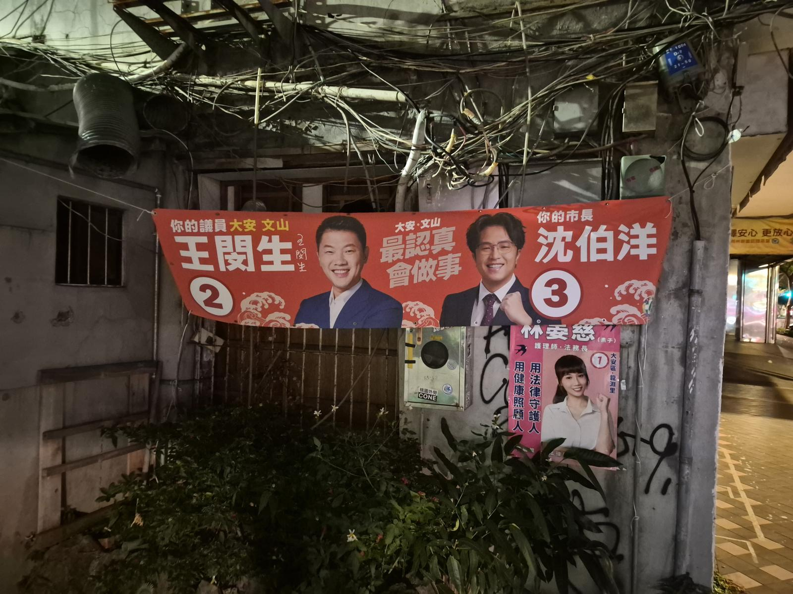
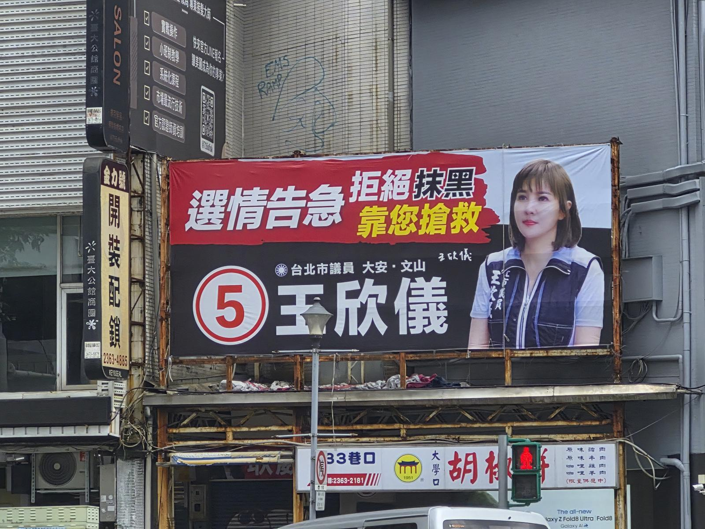
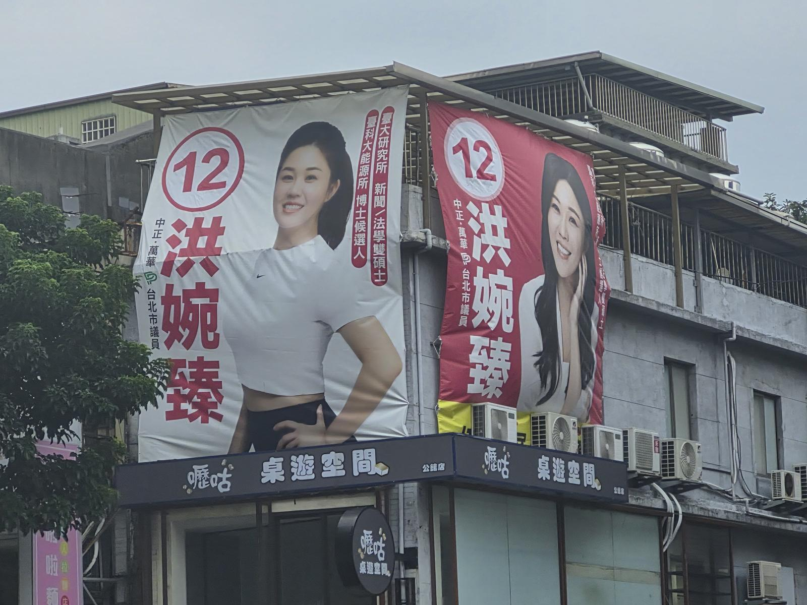
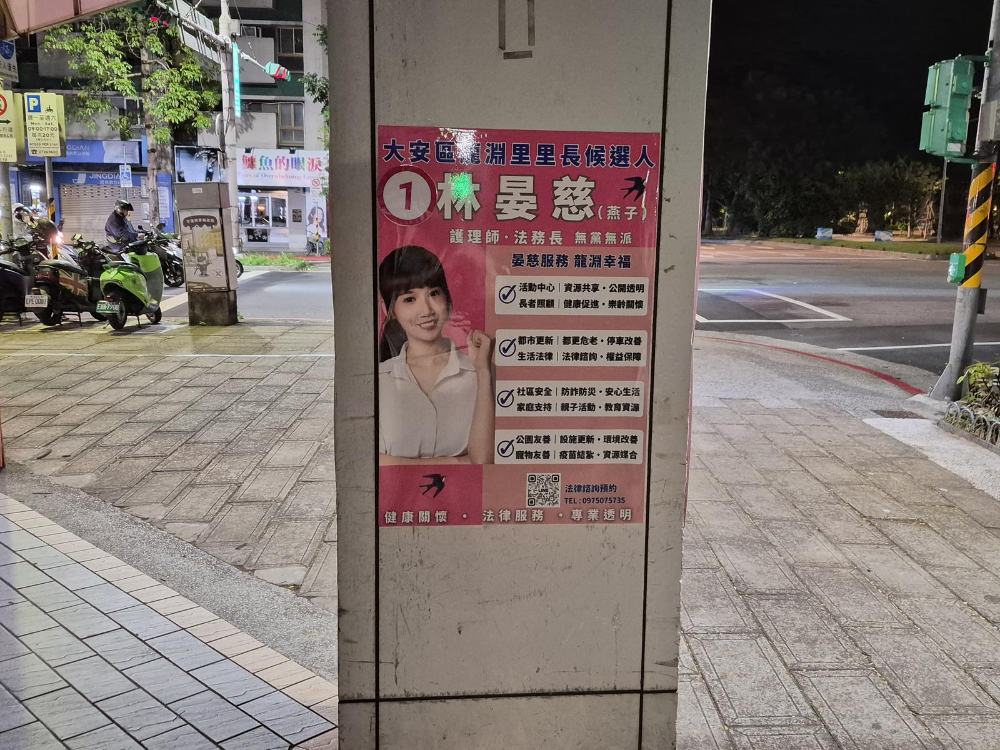
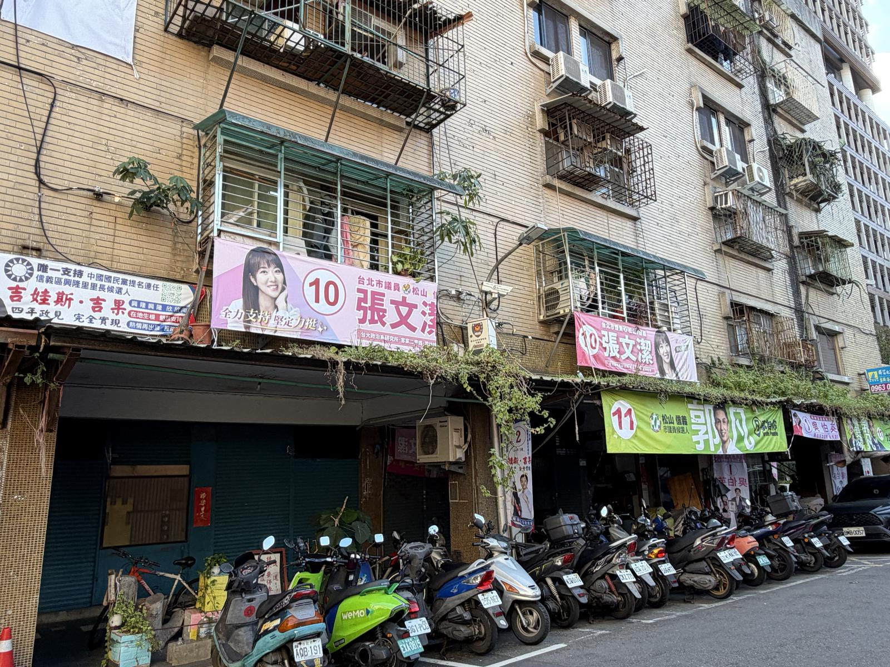

市長：搭著議員一起出現
全市一個選區，看板最常見的形式之一，是和同黨的議員參選人放在同一條帆布上、共用一句口號。這種「母雞帶小雞」的做法各陣營都會用。
本次素材只剛好拍到一位市長參選人的看板，不代表各陣營的看板數量；台北市長共有 6 位參選人。
2026 年地方選舉在 11 月 28 日（六）上午 8 點到下午 4 點投票。這次一次選出九類地方公職，從直轄市長一路選到村里長。
在台北，市長是 6 人搶 1 席，市議員是 98 人登記、競逐 61 席。本文多數照片拍攝的大安、文山（台北市議員第六選區），候選人名單公告後是 18 人搶 13 席。放大到全國，總共有 19,695 人登記，搶 11,051 個名額——每一位都需要被看見，而最便宜、最直接的「被看見」，就是把臉掛到街上。
《公職人員選舉罷免法》第 40 條規定了法定的競選活動期間：直轄市長 15 天、直轄市議員 10 天、村里長 5 天，都從投票日前一天往前算。換算成日曆，市長從 11 月 13 日、議員從 11 月 18 日、里長從 11 月 23 日開始。
但看板不受這幾天限制。台北的《競選廣告物管理自治條例》規定，競選廣告物可以從參選人的競選辦事處登記的隔天，一直掛到投票日。每位參選人登記的時間不同，所以街上的看板，往往在法定競選活動開始前就已經掛好了。本文的照片只記錄了它們在投票前一週的樣子，不代表它們什麼時候出現。
灰色漸層代表看板設置期間：起點依各參選人登記競選辦事處的日期而定。紅字是今天。
同一張臉，掛在不同的地方，就成了不同的媒介。以下依看板的「載體」分成六類，從最高的屋頂一路看到最低的盆栽。
台北《競選廣告物管理自治條例》第 3 條列出五個要素：姓名、圖像、號次、競選項目、競選標語。出現三項以上才算「競選廣告物」，只能在競選期間、合法位置設置，違規可罰 1～5 萬元；兩項以下就回到一般廣告規範，俗稱「三點不露」。
點照片上的虛線框或下面的按鈕，用膠帶貼住要素。

九合一在台北的街頭主要是三層：市長、市議員、里長。選區越小，看板通常越小、掛得越低，也越靠近家門口。

全市一個選區，看板最常見的形式之一，是和同黨的議員參選人放在同一條帆布上、共用一句口號。這種「母雞帶小雞」的做法各陣營都會用。
本次素材只剛好拍到一位市長參選人的看板，不代表各陣營的看板數量；台北市長共有 6 位參選人。

一個選區涵蓋兩個行政區，要在大範圍裡被看見，所以看板多半又大又高：整面外牆的直幅、屋頂垂下的帆布，或是印在公車上、跟著路線移動。

選區只有一個里，看板就縮到柱子上的海報、騎樓下的布條，高度剛好和行人視線齊平。海報上常常直接列出政見與聯絡方式，因為選民就是街坊。
《公職人員選舉罷免法》第 52 條要求參選人在投票日後七日內自行清除競選廣告物；沒清的，台北依看板種類交給不同單位處理。不過建管單位坦言人力有限，多半靠民眾檢舉才會出動。
類型依照片外觀判斷，實際以主管機關認定為準。

競選看板是台灣選舉最古老、也最頑固的媒介。它不能點擊、不能分享，卻天天被機車騎士、公車乘客、半夜回家的學生看見。它也是最誠實的城市地圖：哪裡租得到牆、哪條路人多、哪個里正在激烈競爭，全寫在帆布上。
這些看板並不便宜：一位候選人受訪時估算，一面看板每月約 3 萬元，光是一面牆的租金就要 2 到 5 萬元。11 月 28 日之後，這些臉會一張張被拆下來。這份報導不評論任何候選人，只想在它們消失之前，把這座城市「長滿臉」的十天留下來。
所有數字查證至 2026 年 11 月 24 日。照片與影片：作者拍攝於 2026/11/18–11/23，地點包括台北市大安、文山、信義、中正等區；拍攝時間僅為素材紀錄，與看板設置時間無關。